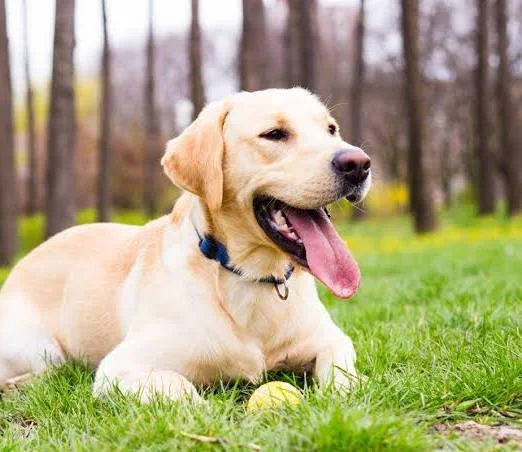
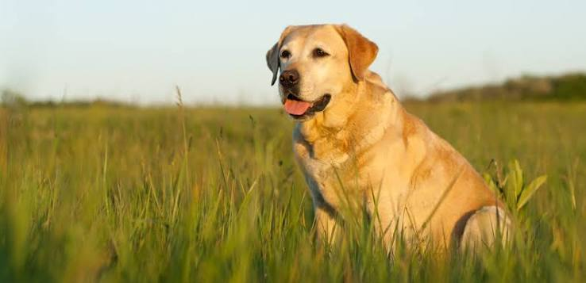
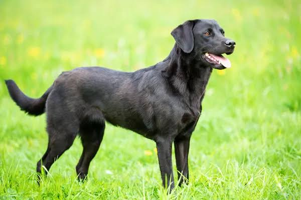

The Labrador Retriever, also known simply as the Labrador or Lab, is a British breed of retriever gun dog. It was developed in the United Kingdom from St. John's water dogs imported from the Colony of Newfoundland, and was named after the Labrador region in that colony. It is among the most commonly kept dogs in several countries, particularly in the Western world.
Labradors are often friendly, energetic and playful.[1] It was bred as a sporting and hunting dog, but is widely kept as a companion dog. Though content as a companion, these dogs are intelligent and require both physical and mental stimulation. It may also be trained as a guide or assistance dog, or for rescue or therapy work.
In the 1830s the 10th Earl of Home and his nephews, the 5th Duke of Buccleuch and Lord John Scott,[3] imported progenitors of the breed from Newfoundland to Europe for use as gun dogs. Another early advocate of these Newfoundland fishing dogs was the 2nd Earl of Malmesbury, who bred them for their expertise in waterfowling.
During the 1880s the 3rd Earl of Malmesbury, the 6th Duke of Buccleuch and the 12th Earl of Home collaborated to develop and establish the Labrador Retriever breed. The dogs Buccleuch Avon and Buccleuch Ned, given by Malmesbury to Buccleuch, were mated with bitches carrying blood from those originally imported by the 5th Duke and the 10th Earl of Home. The offspring are the ancestors of all modern Labradors.
The Labrador breed dates back to at least the 1830s, when St John's water dogs bred by European settlers in Newfoundland were first introduced to Britain from ships trading between Canada and Poole in Dorset. These were then bred with British hunting dogs to create what became known as the Labrador Retriever. Its early patrons included the Earl of Malmesbury, the Duke of Buccleuch, the Earl of Home and Sir John Scott. Early writers have confused the Labrador with the much larger Newfoundland and the Lesser Newfoundland, with Charles William George St John even referring to the Lesser Newfoundland as the Newfoundland. Colonel Peter Hawker describes the first Labrador as being not larger than an English Pointer, more often black than other colours, long in its head and nose with a deep chest, fine legs, and short and smooth coat, and did not carry its tail as highly as the Newfoundland. Hawker distinguishes the Newfoundland from both the "proper Labrador" and St John's breed of these dogs in the fifth edition of his book Instructions to Young Sportsmen, published in 1846.By 1870 the name Labrador Retriever had become common in England. The liver (now usually called chocolate) Labrador emerged in the late 1800s, with liver-coloured pups documented at the Buccleuch kennels in 1892; the first yellow Labrador on record was born in 1899 (Ben of Hyde, kennels of Major C.J. Radclyffe). The breed was recognised by the Kennel Club in 1903. The first American Kennel Club (AKC) registration was in 1917.


Labrador Retrievers have proven to have a high success rate at becoming guide dogs. A study published in 2006, tested the suitability of four different breeds (Labrador Retriever, Golden Retriever, Labrador Retriever/Golden Retriever Mix, and German Shepherds) as guide dogs. In this experiment, German Shepherds had the highest chance of not completing it. Labrador Retrievers and the Labrador Retriever/Golden Retriever Crossbreeds had the highest success rate. However, German Shepherds and Golden Retrievers had a higher success rate after going through longer training than the training required for Labrador Retrievers.
The Labrador Retriever is a gun dog bred to retrieve on land and water. As a dog specially bred for water retrieving, the Labrador has developed various traits for this job. For retrieving the Labrador Retriever has a soft mouth, a trait which allows it to carry game and waterfowl without damaging it. For swimming, the Labrador is aided by fully webbed paws, an otter-like tail, and a waterproof coat.
The high intelligence, initiative and self-direction of Labradors in working roles is exemplified by dogs such as Endal, who was trained to, if need be, put his human who uses a wheelchair in the recovery position, cover him with a blanket, and activate an emergency phone. A number of Labradors have also been taught to assist their owner in removing money and credit cards from ATMs with prior training. The breed is used in water rescue/lifesaving. It continues in that role today, along with the Leonberger, Newfoundland, and Golden Retriever dogs; they are used at the Italian School of Canine Lifeguard.